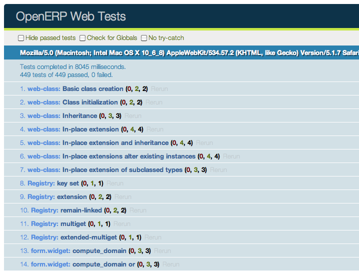

Javascript
Widgets
- class openerp.Widget()
The base class for all visual components. It corresponds to an MVC view, and provides a number of service to simplify handling of a section of a page:
- Handles parent/child relationships between widgets
- Provides extensive lifecycle management with safety features (e.g. automatically destroying children widgets during the destruction of a parent)
- Automatic rendering with qweb
- Backbone-compatible shortcuts
DOM Root
A Widget() is responsible for a section of the page materialized by the DOM root of the widget.
A widget’s DOM root is available via two attributes:
- openerp.Widget.el
raw DOM element set as root to the widget
- openerp.Widget.$el
jQuery wrapper around el
There are two main ways to define and generate this DOM root:
- openerp.Widget.template
Should be set to the name of a QWeb template. If set, the template will be rendered after the widget has been initialized but before it has been started. The root element generated by the template will be set as the DOM root of the widget.
- openerp.Widget.tagName
Used if the widget has no template defined. Defaults to div, will be used as the tag name to create the DOM element to set as the widget’s DOM root. It is possible to further customize this generated DOM root with the following attributes:
- openerp.Widget.id
Used to generate an id attribute on the generated DOM root.
- openerp.Widget.className
Used to generate a class attribute on the generated DOM root.
- openerp.Widget.attributes
Mapping (object literal) of attribute names to attribute values. Each of these k:v pairs will be set as a DOM attribute on the generated DOM root.
None of these is used in case a template is specified on the widget.
The DOM root can also be defined programmatically by overridding
- openerp.Widget.renderElement()
Renders the widget’s DOM root and sets it. The default implementation will render a set template or generate an element as described above, and will call setElement() on the result.
Any override to renderElement() which does not call its _super must call setElement() with whatever it generated or the widget’s behavior is undefined.
Note
The default renderElement() can be called repeatedly, it will replace the previous DOM root (using replaceWith). However, this requires that the widget correctly sets and unsets its events (and children widgets). Generally, renderElement() should not be called repeatedly unless the widget advertizes this feature.
Using a widget
A widget’s lifecycle has 3 main phases:
creation and initialization of the widget instance
- openerp.Widget.init(parent)
initialization method of widgets, synchronous, can be overridden to take more parameters from the widget’s creator/parent
Arguments: - parent (Widget()) – the new widget’s parent, used to handle automatic destruction and event propagation. Can be null for the widget to have no parent.
DOM injection and startup, this is done by calling one of:
- openerp.Widget.appendTo(element)
Renders the widget and inserts it as the last child of the target, uses .appendTo()
- openerp.Widget.prependTo(element)
Renders the widget and inserts it as the first child of the target, uses .prependTo()
- openerp.Widget.insertAfter(element)
Renders the widget and inserts it as the preceding sibling of the target, uses .insertAfter()
- openerp.Widget.insertBefore(element)
Renders the widget and inserts it as the following sibling of the target, uses .insertBefore()
All of these methods accept whatever the corresponding jQuery method accepts (CSS selectors, DOM nodes or jQuery objects). They all return a deferred and are charged with three tasks:
rendering the widget’s root element via renderElement()
inserting the widget’s root element in the DOM using whichever jQuery method they match
starting the widget, and returning the result of starting it
- openerp.Widget.start()
asynchronous startup of the widget once it’s been injected in the DOM, generally used to perform asynchronous RPC calls to fetch whatever remote data is necessary for the widget to do its work.
Must return a deferred to indicate when its work is done.
A widget is not guaranteed to work correctly until its start() method has finished executing. The widget’s parent/creator must wait for a widget to be fully started before interacting with it
Returns: deferred object
widget destruction and cleanup
- openerp.Widget.destroy()
destroys the widget’s children, unbinds its events and removes its root from the DOM. Automatically called when the widget’s parent is destroyed, must be called explicitly if the widget has no parents or if it is removed but its parent remains.
A widget being destroyed is automatically unlinked from its parent.
Related to widget destruction is an important utility method:
- openerp.Widget.alive(deferred[, reject=false])
A significant issue with RPC and destruction is that an RPC call may take a long time to execute and return while a widget is being destroyed or after it has been destroyed, trying to execute its operations on a widget in a broken/invalid state.
This is a frequent source of errors or strange behaviors.
alive() can be used to wrap an RPC call, ensuring that whatever operations should be executed when the call ends are only executed if the widget is still alive:
this.alive(this.model.query().all()).then(function (records) { // would break if executed after the widget is destroyed, wrapping // rpc in alive() prevents execution _.each(records, function (record) { self.$el.append(self.format(record)); }); });
Arguments: Returns: deferred object
- openerp.Widget.isDestroyed()
Returns: true if the widget is being or has been destroyed, false otherwise
Accessing DOM content
- Because a widget is only responsible for the content below its DOM root, there
- is a shortcut for selecting sub-sections of a widget’s DOM:
- openerp.Widget.$(selector)
Applies the CSS selector specified as parameter to the widget’s DOM root:
this.$(selector);
is functionally identical to:
this.$el.find(selector);
Arguments: - selector (String) – CSS selector
Returns: jQuery object
Note
this helper method is similar to Backbone.View.$
Resetting the DOM root
- openerp.Widget.setElement(element)
Re-sets the widget’s DOM root to the provided element, also handles re-setting the various aliases of the DOM root as well as unsetting and re-setting delegated events.
Arguments: - element (Element) – a DOM element or jQuery object to set as the widget’s DOM root
Note
should be mostly compatible with Backbone’s setElement
DOM events handling
A widget will generally need to respond to user action within its section of the page. This entails binding events to DOM elements.
To this end, Widget() provides a shortcut:
- openerp.Widget.events
Events are a mapping of an event selector (an event name and an optional CSS selector separated by a space) to a callback. The callback can be the name of a widget’s method or a function object. In either case, the this will be set to the widget:
events: { 'click p.oe_some_class a': 'some_method', 'change input': function (e) { e.stopPropagation(); } },
The selector is used for jQuery’s event delegation, the callback will only be triggered for descendants of the DOM root matching the selector[1]. If the selector is left out (only an event name is specified), the event will be set directly on the widget’s DOM root.
- openerp.Widget.delegateEvents()
This method is in charge of binding events to the DOM. It is automatically called after setting the widget’s DOM root.
It can be overridden to set up more complex events than the events map allows, but the parent should always be called (or events won’t be handled correctly).
- openerp.Widget.undelegateEvents()
This method is in charge of unbinding events from the DOM root when the widget is destroyed or the DOM root is reset, in order to avoid leaving “phantom” events.
It should be overridden to un-set any event set in an override of delegateEvents().
Note
this behavior should be compatible with Backbone’s delegateEvents, apart from not accepting any argument.
Subclassing Widget
Widget() is subclassed in the standard manner (via the extend() method), and provides a number of abstract properties and concrete methods (which you may or may not want to override). Creating a subclass looks like this:
var MyWidget = openerp.Widget.extend({
// QWeb template to use when rendering the object
template: "MyQWebTemplate",
events: {
// events binding example
'click .my-button': 'handle_click',
},
init: function(parent) {
this._super(parent);
// insert code to execute before rendering, for object
// initialization
},
start: function() {
var sup = this._super();
// post-rendering initialization code, at this point
// allows multiplexing deferred objects
return $.when(
// propagate asynchronous signal from parent class
sup,
// return own's asynchronous signal
this.rpc(/* */))
}
});
The new class can then be used in the following manner:
// Create the instance
var my_widget = new MyWidget(this);
// Render and insert into DOM
my_widget.appendTo(".some-div");
After these two lines have executed (and any promise returned by appendTo() has been resolved if needed), the widget is ready to be used.
Note
the insertion methods will start the widget themselves, and will return the result of start().
If for some reason you do not want to call these methods, you will have to first call render() on the widget, then insert it into your DOM and start it.
If the widget is not needed anymore (because it’s transient), simply terminate it:
my_widget.destroy();
will unbind all DOM events, remove the widget’s content from the DOM and destroy all widget data.
Development Guidelines
Identifiers (id attribute) should be avoided. In generic applications and modules, id limits the re-usability of components and tends to make code more brittle. Most of the time, they can be replaced with nothing, classes or keeping a reference to a DOM node or jQuery element.
If an id is absolutely necessary (because a third-party library requires one), the id should be partially generated using _.uniqueId() e.g.:
this.id = _.uniqueId('my-widget-')
Avoid predictable/common CSS class names. Class names such as “content” or “navigation” might match the desired meaning/semantics, but it is likely an other developer will have the same need, creating a naming conflict and unintended behavior. Generic class names should be prefixed with e.g. the name of the component they belong to (creating “informal” namespaces, much as in C or Objective-C).
Global selectors should be avoided. Because a component may be used several times in a single page (an example in Odoo is dashboards), queries should be restricted to a given component’s scope. Unfiltered selections such as $(selector) or document.querySelectorAll(selector) will generally lead to unintended or incorrect behavior. Odoo Web’s Widget() has an attribute providing its DOM root ($el), and a shortcut to select nodes directly ($()).
More generally, never assume your components own or controls anything beyond its own personal $el
html templating/rendering should use QWeb unless absolutely trivial.
All interactive components (components displaying information to the screen or intercepting DOM events) must inherit from Widget() and correctly implement and use its API and life cycle.
RPC
To display and interact with data, calls to the Odoo server are necessary. This is performed using RPC <Remote Procedure Call>.
Odoo Web provides two primary APIs to handle this: a low-level JSON-RPC based API communicating with the Python section of Odoo Web (and of your module, if you have a Python part) and a high-level API above that allowing your code to talk directly to high-level Odoo models.
All networking APIs are asynchronous. As a result, all of them will return Deferred objects (whether they resolve those with values or not). Understanding how those work before before moving on is probably necessary.
High-level API: calling into Odoo models
Access to Odoo object methods (made available through XML-RPC from the server) is done via openerp.Model(). It maps onto the Odoo server objects via two primary methods, call() and query().
call() is a direct mapping to the corresponding method of the Odoo server object. Its usage is similar to that of the Odoo Model API, with three differences:
The interface is asynchronous, so instead of returning results directly RPC method calls will return Deferred instances, which will themselves resolve to the result of the matching RPC call.
Because ECMAScript 3/Javascript 1.5 doesnt feature any equivalent to __getattr__ or method_missing, there needs to be an explicit method to dispatch RPC methods.
No notion of pooler, the model proxy is instantiated where needed, not fetched from an other (somewhat global) object:
var Users = new openerp.Model('res.users'); Users.call('change_password', ['oldpassword', 'newpassword'], {context: some_context}).then(function (result) { // do something with change_password result });
query() is a shortcut for a builder-style interface to searches (search + read in Odoo RPC terms). It returns a Query() object which is immutable but allows building new Query() instances from the first one, adding new properties or modifiying the parent object’s:
Users.query(['name', 'login', 'user_email', 'signature'])
.filter([['active', '=', true], ['company_id', '=', main_company]])
.limit(15)
.all().then(function (users) {
// do work with users records
});
The query is only actually performed when calling one of the query serialization methods, all() and first(). These methods will perform a new RPC call every time they are called.
For that reason, it’s actually possible to keep “intermediate” queries around and use them differently/add new specifications on them.
- class openerp.Model(name)
- openerp.Model.name
name of the OpenERP model this object is bound to
- openerp.Model.call(method[, args][, kwargs])
Calls the method method of the current model, with the provided positional and keyword arguments.
Arguments: - method (String) – method to call over rpc on the name
- args (Array<>) – positional arguments to pass to the method, optional
- kwargs (Object<>) – keyword arguments to pass to the method, optional
Return type: Deferred<>
- openerp.Model.query(fields)
Arguments: - fields (Array<String>) – list of fields to fetch during the search
Returns: a Query() object representing the search to perform
- class openerp.web.Query(fields)
The first set of methods is the “fetching” methods. They perform RPC queries using the internal data of the object they’re called on.
- openerp.web.Query.all()
Fetches the result of the current Query() object’s search.
Return type: Deferred<Array<>>
- openerp.web.Query.first()
Fetches the first result of the current Query(), or null if the current Query() does have any result.
Return type: Deferred<Object | null>
- openerp.web.Query.count()
Fetches the number of records the current Query() would retrieve.
Return type: Deferred<Number>
- openerp.web.Query.group_by(grouping...)
Fetches the groups for the query, using the first specified grouping parameter
Arguments: - grouping (Array<String>) – Lists the levels of grouping asked of the server. Grouping can actually be an array or varargs.
Return type: Deferred<Array<openerp.web.QueryGroup>> | null
The second set of methods is the “mutator” methods, they create a new Query() object with the relevant (internal) attribute either augmented or replaced.
- openerp.web.Query.context(ctx)
Adds the provided ctx to the query, on top of any existing context
- openerp.web.Query.filter(domain)
Adds the provided domain to the query, this domain is AND-ed to the existing query domain.
- opeenrp.web.Query.offset(offset)
Sets the provided offset on the query. The new offset replaces the old one.
- openerp.web.Query.limit(limit)
Sets the provided limit on the query. The new limit replaces the old one.
- openerp.web.Query.order_by(fields)
Overrides the model’s natural order with the provided field specifications. Behaves much like Django’s QuerySet.order_by:
- Takes 1..n field names, in order of most to least importance (the first field is the first sorting key). Fields are provided as strings.
- A field specifies an ascending order, unless it is prefixed with the minus sign “-” in which case the field is used in the descending order
Divergences from Django’s sorting include a lack of random sort (? field) and the inability to “drill down” into relations for sorting.
Aggregation (grouping)
Odoo has powerful grouping capacities, but they are kind-of strange in that they’re recursive, and level n+1 relies on data provided directly by the grouping at level n. As a result, while openerp.models.Model.read_group() works it’s not a very intuitive API.
Odoo Web eschews direct calls to read_group() in favor of calling a method of Query(), much in the way it is one in SQLAlchemy [2]:
some_query.group_by(['field1', 'field2']).then(function (groups) {
// do things with the fetched groups
});
This method is asynchronous when provided with 1..n fields (to group on) as argument, but it can also be called without any field (empty fields collection or nothing at all). In this case, instead of returning a Deferred object it will return null.
When grouping criterion come from a third-party and may or may not list fields (e.g. could be an empty list), this provides two ways to test the presence of actual subgroups (versus the need to perform a regular query for records):
A check on group_by‘s result and two completely separate code paths:
var groups; if (groups = some_query.group_by(gby)) { groups.then(function (gs) { // groups }); } // no groups
Or a more coherent code path using when()‘s ability to coerce values into deferreds:
$.when(some_query.group_by(gby)).then(function (groups) { if (!groups) { // No grouping } else { // grouping, even if there are no groups (groups // itself could be an empty array) } });
The result of a (successful) group_by() is an array of QueryGroup():
- class openerp.web.QueryGroup()
- openerp.web.QueryGroup.get(key)
returns the group’s attribute key. Known attributes are:
- grouped_on
- which grouping field resulted from this group
- value
- grouped_on‘s value for this group
- length
- the number of records in the group
- aggregates
- a {field: value} mapping of aggregations for the group
- openerp.web.QueryGroup.query([fields...])
equivalent to openerp.web.Model.query() but pre-filtered to only include the records within this group. Returns a Query() which can be further manipulated as usual.
- openerp.web.QueryGroup.subgroups()
returns a deferred to an array of QueryGroup() below this one
Low-level API: RPC calls to Python side
While the previous section is great for calling core OpenERP code (models code), it does not work if you want to call the Python side of Odoo Web.
For this, a lower-level API exists on on Session() objects (usually available through openerp.session): the rpc method.
This method simply takes an absolute path (the absolute URL of the JSON route to call) and a mapping of attributes to values (passed as keyword arguments to the Python method). This function fetches the return value of the Python methods, converted to JSON.
For instance, to call the resequence of the DataSet() controller:
openerp.session.rpc('/web/dataset/resequence', {
model: some_model,
ids: array_of_ids,
offset: 42
}).then(function (result) {
// resequence didn't error out
}, function () {
// an error occured during during call
});
Web Client
Testing in Odoo Web Client
Javascript Unit Testing
Odoo Web includes means to unit-test both the core code of Odoo Web and your own javascript modules. On the javascript side, unit-testing is based on QUnit with a number of helpers and extensions for better integration with Odoo.
To see what the runner looks like, find (or start) an Odoo server with the web client enabled, and navigate to /web/tests This will show the runner selector, which lists all modules with javascript unit tests, and allows starting any of them (or all javascript tests in all modules at once).

Clicking any runner button will launch the corresponding tests in the bundled QUnit runner:
Writing a test case
The first step is to list the test file(s). This is done through the test key of the Odoo manifest, by adding javascript files to it:
{
'name': "Demonstration of web/javascript tests",
'category': 'Hidden',
'depends': ['web'],
'test': ['static/test/demo.js'],
}
and to create the corresponding test file(s)
Note
Test files which do not exist will be ignored, if all test files of a module are ignored (can not be found), the test runner will consider that the module has no javascript tests.
After that, refreshing the runner selector will display the new module and allow running all of its (0 so far) tests:
The next step is to create a test case:
openerp.testing.section('basic section', function (test) {
test('my first test', function () {
ok(false, "this test has run");
});
});
All testing helpers and structures live in the openerp.testing module. Odoo tests live in a section(), which is itself part of a module. The first argument to a section is the name of the section, the second one is the section body.
test, provided by the section() to the callback, is used to register a given test case which will be run whenever the test runner actually does its job. Odoo Web test case use standard QUnit assertions within them.
Launching the test runner at this point will run the test and display the corresponding assertion message, with red colors indicating the test failed:

Fixing the test (by replacing false to true in the assertion) will make it pass:

Assertions
As noted above, Odoo Web’s tests use qunit assertions. They are available globally (so they can just be called without references to anything). The following list is available:
- ok(state[, message])
checks that state is truthy (in the javascript sense)
- strictEqual(actual, expected[, message])
checks that the actual (produced by a method being tested) and expected values are identical (roughly equivalent to ok(actual === expected, message))
- notStrictEqual(actual, expected[, message])
checks that the actual and expected values are not identical (roughly equivalent to ok(actual !== expected, message))
- deepEqual(actual, expected[, message])
deep comparison between actual and expected: recurse into containers (objects and arrays) to ensure that they have the same keys/number of elements, and the values match.
- notDeepEqual(actual, expected[, message])
inverse operation to deepEqual()
- throws(block[, expected][, message])
checks that, when called, the block throws an error. Optionally validates that error against expected.
Arguments: - block (Function) –
- expected (Error | RegExp) – if a regexp, checks that the thrown error’s message matches the regular expression. If an error type, checks that the thrown error is of that type.
- equal(actual, expected[, message])
checks that actual and expected are loosely equal, using the == operator and its coercion rules.
- notEqual(actual, expected[, message])
inverse operation to equal()
Getting an Odoo instance
The Odoo instance is the base through which most Odoo Web modules behaviors (functions, objects, ) are accessed. As a result, the test framework automatically builds one, and loads the module being tested and all of its dependencies inside it. This new instance is provided as the first positional parameter to your test cases. Let’s observe by adding javascript code (not test code) to the test module:
{
'name': "Demonstration of web/javascript tests",
'category': 'Hidden',
'depends': ['web'],
'js': ['static/src/js/demo.js'],
'test': ['static/test/demo.js'],
}
// src/js/demo.js
openerp.web_tests_demo = function (instance) {
instance.web_tests_demo = {
value_true: true,
SomeType: instance.web.Class.extend({
init: function (value) {
this.value = value;
}
})
};
};
and then adding a new test case, which simply checks that the instance contains all the expected stuff we created in the module:
// test/demo.js
test('module content', function (instance) {
ok(instance.web_tests_demo.value_true, "should have a true value");
var type_instance = new instance.web_tests_demo.SomeType(42);
strictEqual(type_instance.value, 42, "should have provided value");
});
DOM Scratchpad
As in the wider client, arbitrarily accessing document content is strongly discouraged during tests. But DOM access is still needed to e.g. fully initialize widgets before testing them.
Thus, a test case gets a DOM scratchpad as its second positional parameter, in a jQuery instance. That scratchpad is fully cleaned up before each test, and as long as it doesn’t do anything outside the scratchpad your code can do whatever it wants:
// test/demo.js
test('DOM content', function (instance, $scratchpad) {
$scratchpad.html('<div><span class="foo bar">ok</span></div>');
ok($scratchpad.find('span').hasClass('foo'),
"should have provided class");
});
test('clean scratchpad', function (instance, $scratchpad) {
ok(!$scratchpad.children().length, "should have no content");
ok(!$scratchpad.text(), "should have no text");
});
Note
The top-level element of the scratchpad is not cleaned up, test cases can add text or DOM children but shoud not alter $scratchpad itself.
Loading templates
To avoid the corresponding processing costs, by default templates are not loaded into QWeb. If you need to render e.g. widgets making use of QWeb templates, you can request their loading through the templates option to the test case function.
This will automatically load all relevant templates in the instance’s qweb before running the test case:
{
'name': "Demonstration of web/javascript tests",
'category': 'Hidden',
'depends': ['web'],
'js': ['static/src/js/demo.js'],
'test': ['static/test/demo.js'],
'qweb': ['static/src/xml/demo.xml'],
}
<!-- src/xml/demo.xml -->
<templates id="template" xml:space="preserve">
<t t-name="DemoTemplate">
<t t-foreach="5" t-as="value">
<p><t t-esc="value"/></p>
</t>
</t>
</templates>
// test/demo.js
test('templates', {templates: true}, function (instance) {
var s = instance.web.qweb.render('DemoTemplate');
var texts = $(s).find('p').map(function () {
return $(this).text();
}).get();
deepEqual(texts, ['0', '1', '2', '3', '4']);
});
Asynchronous cases
The test case examples so far are all synchronous, they execute from the first to the last line and once the last line has executed the test is done. But the web client is full of asynchronous code, and thus test cases need to be async-aware.
This is done by returning a deferred from the case callback:
// test/demo.js
test('asynchronous', {
asserts: 1
}, function () {
var d = $.Deferred();
setTimeout(function () {
ok(true);
d.resolve();
}, 100);
return d;
});
This example also uses the options parameter to specify the number of assertions the case should expect, if less or more assertions are specified the case will count as failed.
Asynchronous test cases must specify the number of assertions they will run. This allows more easily catching situations where e.g. the test architecture was not warned about asynchronous operations.
Note
Asynchronous test cases also have a 2 seconds timeout: if the test does not finish within 2 seconds, it will be considered failed. This pretty much always means the test will not resolve. This timeout only applies to the test itself, not to the setup and teardown processes.
Note
If the returned deferred is rejected, the test will be failed unless fail_on_rejection is set to false.
RPC
An important subset of asynchronous test cases is test cases which need to perform (and chain, to an extent) RPC calls.
Note
Because they are a subset of asynchronous cases, RPC cases must also provide a valid assertions count.
To enable mock RPC, set the rpc option to mock. This will add a third parameter to the test case callback:
- mock(rpc_spec, handler)
Can be used in two different ways depending on the shape of the first parameter:
If it matches the pattern model:method (if it contains a colon, essentially) the call will set up the mocking of an RPC call straight to the Odoo server (through XMLRPC) as performed via e.g. openerp.web.Model.call().
In that case, handler should be a function taking two arguments args and kwargs, matching the corresponding arguments on the server side and should simply return the value as if it were returned by the Python XMLRPC handler:
test('XML-RPC', {rpc: 'mock', asserts: 3}, function (instance, $s, mock) { // set up mocking mock('people.famous:name_search', function (args, kwargs) { strictEqual(kwargs.name, 'bob'); return [ [1, "Microsoft Bob"], [2, "Bob the Builder"], [3, "Silent Bob"] ]; }); // actual test code return new instance.web.Model('people.famous') .call('name_search', {name: 'bob'}).then(function (result) { strictEqual(result.length, 3, "shoud return 3 people"); strictEqual(result[0][1], "Microsoft Bob", "the most famous bob should be Microsoft Bob"); }); });
Otherwise, if it matches an absolute path (e.g. /a/b/c) it will mock a JSON-RPC call to a web client controller, such as /web/webclient/translations. In that case, the handler takes a single params argument holding all of the parameters provided over JSON-RPC.
As previously, the handler should simply return the result value as if returned by the original JSON-RPC handler:
test('JSON-RPC', {rpc: 'mock', asserts: 3, templates: true}, function (instance, $s, mock) { var fetched_dbs = false, fetched_langs = false; mock('/web/database/get_list', function () { fetched_dbs = true; return ['foo', 'bar', 'baz']; }); mock('/web/session/get_lang_list', function () { fetched_langs = true; return [['vo_IS', 'Hopelandic / Vonlenska']]; }); // widget needs that or it blows up instance.webclient = {toggle_bars: openerp.testing.noop}; var dbm = new instance.web.DatabaseManager({}); return dbm.appendTo($s).then(function () { ok(fetched_dbs, "should have fetched databases"); ok(fetched_langs, "should have fetched languages"); deepEqual(dbm.db_list, ['foo', 'bar', 'baz']); }); });
Note
Mock handlers can contain assertions, these assertions should be part of the assertions count (and if multiple calls are made to a handler containing assertions, it multiplies the effective number of assertions).
Testing API
- openerp.testing.section(name, [options, ]body)
A test section, serves as shared namespace for related tests (for constants or values to only set up once). The body function should contain the tests themselves.
Note that the order in which tests are run is essentially undefined, do not rely on it.
Arguments: - name (String) –
- options (TestOptions) –
- body (Function<case(), void>) –
- openerp.testing.case(name, [options, ]callback)
Registers a test case callback in the test runner, the callback will only be run once the runner is started (or maybe not at all, if the test is filtered out).
Arguments: - name (String) –
- options (TestOptions) –
- callback (Function<instance, $, Function<String, Function, void>>) –
- class TestOptions()
the various options which can be passed to section() or case(). Except for setup and teardown, an option on case() will overwrite the corresponding option on section() so e.g. rpc can be set for a section() and then differently set for some case() of that section()
- TestOptions.asserts
An integer, the number of assertions which should run during a normal execution of the test. Mandatory for asynchronous tests.
- TestOptions.setup
Test case setup, run right before each test case. A section’s setup() is run before the case’s own, if both are specified.
- TestOptions.teardown
Test case teardown, a case’s teardown() is run before the corresponding section if both are present.
- TestOptions.fail_on_rejection
If the test is asynchronous and its resulting promise is rejected, fail the test. Defaults to true, set to false to not fail the test in case of rejection:
// test/demo.js test('unfail rejection', { asserts: 1, fail_on_rejection: false }, function () { var d = $.Deferred(); setTimeout(function () { ok(true); d.reject(); }, 100); return d; });
- TestOptions.rpc
RPC method to use during tests, one of "mock" or "rpc". Any other value will disable RPC for the test (if they were enabled by the suite for instance).
- TestOptions.templates
Whether the current module (and its dependencies)’s templates should be loaded into QWeb before starting the test. A boolean, false by default.
The test runner can also use two global configuration values set directly on the window object:
- oe_all_dependencies is an Array of all modules with a web component, ordered by dependency (for a module A with dependencies A', any module of A' must come before A in the array)
Running through Python
The web client includes the means to run these tests on the command-line (or in a CI system), but while actually running it is pretty simple the setup of the pre-requisite parts has some complexities.
Install unittest2 in your Python environment. Both can trivially be installed via pip or easy_install.
Install PhantomJS. It is a headless browser which allows automating running and testing web pages. QUnitSuite uses it to actually run the qunit test suite.
The PhantomJS website provides pre-built binaries for some platforms, and your OS’s package management probably provides it as well.
If you’re building PhantomJS from source, I recommend preparing for some knitting time as it’s not exactly fast (it needs to compile both Qt and Webkit, both being pretty big projects).
Note
Because PhantomJS is webkit-based, it will not be able to test if Firefox, Opera or Internet Explorer can correctly run the test suite (and it is only an approximation for Safari and Chrome). It is therefore recommended to also run the test suites in actual browsers once in a while.
Install a new database with all relevant modules (all modules with a web component at least), then restart the server
Note
For some tests, a source database needs to be duplicated. This operation requires that there be no connection to the database being duplicated, but Odoo doesn’t currently break existing/outstanding connections, so restarting the server is the simplest way to ensure everything is in the right state.
Launch oe run-tests -d $DATABASE -mweb with the correct addons-path specified (and replacing $DATABASE by the source database you created above)
Note
If you leave out -mweb, the runner will attempt to run all the tests in all the modules, which may or may not work.
If everything went correctly, you should now see a list of tests with (hopefully) ok next to their names, closing with a report of the number of tests run and the time it took:
test_empty_find (openerp.addons.web.tests.test_dataset.TestDataSetController) ... ok
test_ids_shortcut (openerp.addons.web.tests.test_dataset.TestDataSetController) ... ok
test_regular_find (openerp.addons.web.tests.test_dataset.TestDataSetController) ... ok
web.testing.stack: direct, value, success ... ok
web.testing.stack: direct, deferred, success ... ok
web.testing.stack: direct, value, error ... ok
web.testing.stack: direct, deferred, failure ... ok
web.testing.stack: successful setup ... ok
web.testing.stack: successful teardown ... ok
web.testing.stack: successful setup and teardown ... ok
[snip ~150 lines]
test_convert_complex_context (openerp.addons.web.tests.test_view.DomainsAndContextsTest) ... ok
test_convert_complex_domain (openerp.addons.web.tests.test_view.DomainsAndContextsTest) ... ok
test_convert_literal_context (openerp.addons.web.tests.test_view.DomainsAndContextsTest) ... ok
test_convert_literal_domain (openerp.addons.web.tests.test_view.DomainsAndContextsTest) ... ok
test_retrieve_nonliteral_context (openerp.addons.web.tests.test_view.DomainsAndContextsTest) ... ok
test_retrieve_nonliteral_domain (openerp.addons.web.tests.test_view.DomainsAndContextsTest) ... ok
----------------------------------------------------------------------
Ran 181 tests in 15.706s
OK
Congratulation, you have just performed a successful “offline” run of the OpenERP Web test suite.
Note
Note that this runs all the Python tests for the web module, but all the web tests for all of Odoo. This can be surprising.
| [1] | not all DOM events are compatible with events delegation |
| [2] | with a small twist: sqlalchemy.orm.query.Query.group_by() is not terminal, it returns a query which can still be altered. |